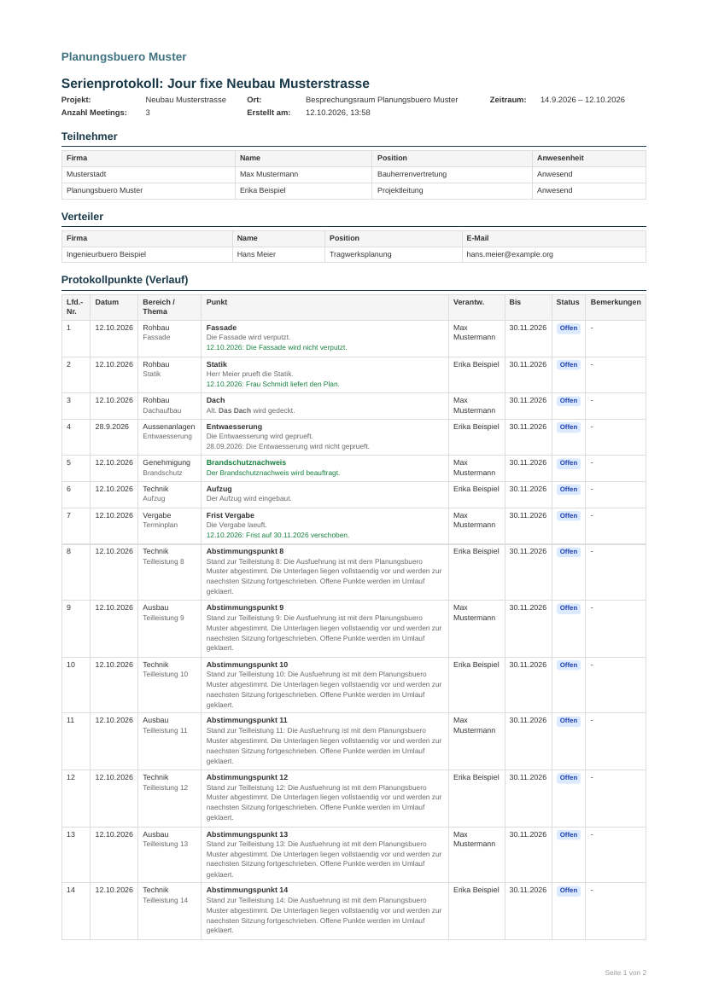
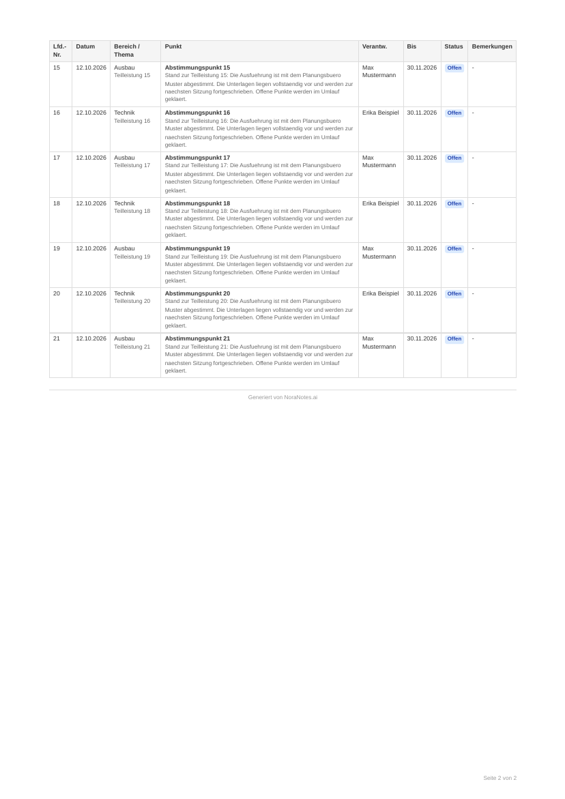
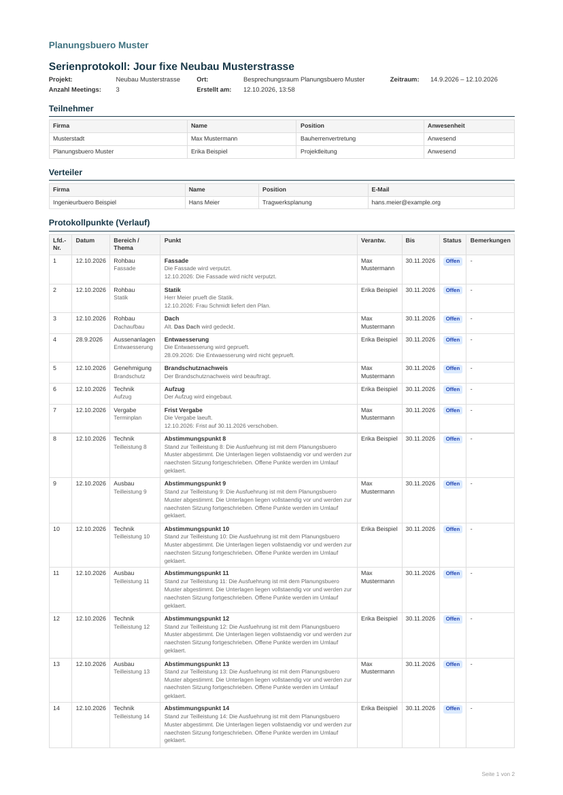

PR #377, Commit 8d8b770 · 12.10.2026 · alle Daten erfunden
generate-meeting-pdf/index.ts des PR-Stands: die Funktion lief unveraendert,
nur Supabase und der Serverstart wurden durch Platzhalter ersetzt. Das HTML ist genau das, was sonst an den PDF-Dienst ginge.
Gerendert wurde mit Chromium, nicht mit dem Produktions-PDF-Dienst — Seitenumbruch und Schriftbild koennen dort leicht abweichen.
Keine Kundendaten, kein Testkonto, kein Deploy.
| Nr. | Fall | Erwartung | Ergebnis |
|---|---|---|---|
| 1 | Verneinung, fehlt im Registertext | Nachtrag gruen, mit Datum 12.10.2026 | erfuellt |
| 2 | Beitrag steht schon als Datumszeile im Register | kein Nachtrag, kein Doppel | erfuellt |
| 3 | **fett** am Satzanfang (Befund der 2. Abnahme) | kein Nachtrag, kein Doppel | erfuellt |
| 4 | Beitrag aus einem aelteren Termin | Text da, mit 28.09.2026, nicht gruen | erfuellt |
| 5 | Punkt in diesem Termin neu angelegt | kein Nachtrag, Titel gruen | erfuellt |
| 6 | new_value ist nur eine Zeitmarke | kein Nachtrag | erfuellt |
| 7 | change_summary hat Vorrang | Nachtrag gruen, mit Datum | erfuellt |
| — | Schalter „gruen markieren“ aus | Farbe weg, Text bleibt | erfuellt |
| — | Seitenumbruch bei 21 Punkten | Kopfzeile wiederholt, keine zerrissene Zeile | erfuellt |
Jeder Beitragstext kommt im PDF genau einmal vor — am erzeugten PDF mit pdftotext nachgezaehlt, nicht nur im HTML.
Nr. 1 und 7 gruen nachgetragen, Nr. 4 schwarz (aelterer Termin), Nr. 5 gruener Titel, Nr. 2/3/6 ohne Nachtrag.


Gleiches Dokument, kein einziges Gruen — und trotzdem steht jeder Text noch da.

serie-markiert.pdf · serie-ohne-markierung.pdf
Der Produktions-PDF-Dienst (api.pdf-mcp.io) wurde nicht benutzt — auf staging fehlt PDF_MCP_API_KEY.
Schriftbild und Seitenumbruch sind dort moeglicherweise minimal anders. Inhalt, Markierung und Dubletten haengen nicht am Renderer
und sind damit abgenommen; die endgueltige Optik braucht einen Lauf mit dem echten Dienst.